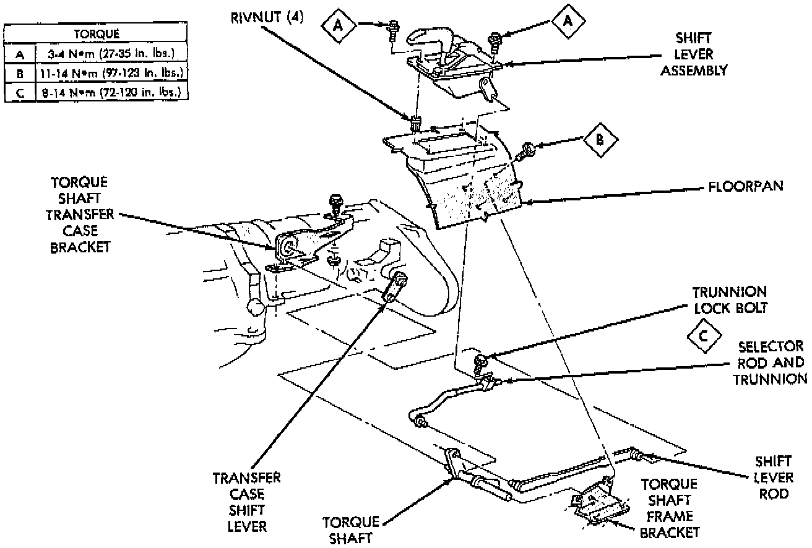

Shifter Transfer Case: Service and Repair

REMOVAL
1. Shift transfer case into 4L.
2. Raise vehicle.
3. Loosen adjusting trunnion locknut and slide shift rod out of trunnion. If rod lacks enough travel to come out of trunnion, push trunnion out of torque shaft.
4. Lower vehicle.
5. Remove console.
6. Remove screws attaching lever assembly to floorpan and remove assembly and shift rod (if left attached).
INSTALLATION
1. If shift rod was not removed from lever assembly, work rod down through floorpan opening. Then position lever assembly on floorpan and install assembly attaching screws.
2. Install console.
3. Raise vehicle.
4. Connect trunnion to torque shaft arm. Or, slide shift rod into trunnion on range lever. Be sure shift rod slides freely in trunnion.
5. Verify that range lever is in 4L position. Then tighten trunnion lock bolt.
6. Lower vehicle and check transfer case shift operation.